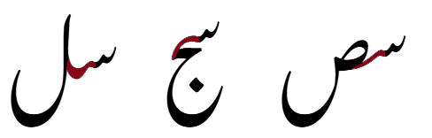
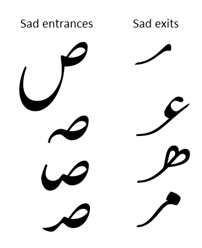
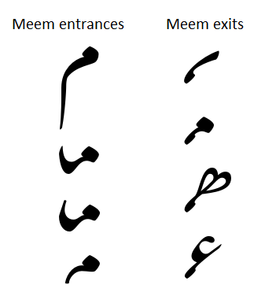

Awami Nastaliq Developer Documentation
Glyph Interfaces and Suffixes
The calligraphic nature of the Nastaliq style means that a distinctive visual connection is needed between any two characters. For instance, the connection between seen and sad is different from the connection between the seen and jeem or the seen and lam, so there needs to be separate forms of the seen to connect to each following character.
As a rule, the shape of the connection is determined by the second character of the pair, although there are exceptions. In some cases (especially for beh-like forms), there exist sequences of three characters, where the third character affects the shape of the first.
We define a set of “interfaces” which indicate the shape of the connection. The interface specifies the exit of the first glyph, the entrance to the second glyph, and the way they connect. Any two glyphs that are designed to support the interface should connect nicely.
For most characters, all of their medial/final forms will use the same interface for the entrance (ie, the shape of the right-hand side). For instance, the entrance of all the medial/final sads are identical, so any “sad”-type exit (left side) will attach to any medial or final sad entrance. The preceding glyphs have the .sd suffix indicating that they are designed with a “sad” exit to support the “sad” interface, so they can connect to a sad.
In the examples below, notice how any of the glyphs with sad exits (right-hand column) will connect with any of the sads (left-hand column):
Similarly, any of the glyphs with meem-style exits on the right will connect with any meem on the left.
Of course there are exceptions and complications. The beh requires quite a few interfaces due to signficant variation in the beh forms. There is an alternate meem form that needs a different interface, as well as the “kashida”-style or toothless seen (which occurs before another seen). The heh-goal requires one interface for the medial and another for the final.
In addition, there are three suffixes that are each used for two distinct interfaces. The final chotiyeh, final qaf/waw, and reh have two final forms that are chosen based on the preceding glyph. (The final qaf and waw forms both use the .qf interfaces. There are two distinct connections, but it turns out that the forms of the qaf and waw do not need to be significantly different, so perhaps the interfaces could be merged.)
Suffixes for Principal Interfaces
Here is a list of the interfaces identified by suffix and the glyphs they connect to:
- default (no suffix) - alef, lam, kaf, dal
- .ai - ain
- .be - beh (default)
- .beM1 - high-tooth beh
- .beM2 - low-tooth beh (including an alternate final beh)
- .benn - beh that occurs before a final noon
- .behg - beh that occurs before a final heh-goal
- .bere - beh that occurs before a final reh
- .beF - final beh (standard; an alternate final beh uses .beM2)
- .by - bariyeh (final)
- .ch - final chotiyeh (two interfaces)
- .fe - feh (and medial qaf)
- .hd - heh-doachaschmee
- .hgM - medial heh-goal
- .hgF - final heh-goal
- .jm - jeem
- .mm - meem (standard)
- .mmX - alternate medial meem (round form)
- .nn - final noon
- .qf - final qaf and waw (two interfaces)
- .re - reh (final) (two interfaces)
- .sd - sad, also the rounded form of kaf that occurs before a lam and alef
- .sn - seen (standard)
- .snsn - flat “kashida”- style seen that occurs before another seen
- .ta - tah
- [.tmF - final teh marbuta - not currently used; instead we use the default forms here]
These exist for virtually all dual-connecting characters, in both initial and medial forms. (Note that 25 interfaces * 2 contexts = 50 forms for each character class.)
Here we show images of all the interfaces listed above.
Other Suffixes
In addition to the suffixes corresponding to the principle interfaces, there are other suffixes that are used. An underscore in the suffix indicates the preceding character(s): - nn_hgbm - form of medial beh that occurs heh-goal, meem, etc. and final noon (see class c_preBehNn_hgbm) - sn_sn - flat toothless seen that occurs between two other seens - _stfh - form of final qaf and waw that follows initial seen, tah, etc. (see class cPreQw_stfh) - _bfkl - final forms of beh and chotiyeh that occur before beh, feh, kaf, etc. (see classes c_preBe_bfkl and c_preChF_bfkl) - _hgM - form of final reh that follows medial heh goal (see c_preReF_hgM) - _jkl - form of final reh that follow jeem, kaf, lam, and initial beh (see c_preReF_jkl)
- _sshg - form of final reh that follows seen, sad, or heh-goal (see c_preReF_sshg - currently not used)
- XX_ss - beh forms following sad or seen - OBSOLETE
- hgF_be - OBSOLETE
Suffixes are used to indicate some special-purpose contextual forms as well:
- .al - used for lams that are followed by alef
- .kf - short or wide forms that occur before a kaf/gaf, to avoid collisions
- .bekl - wide form of jeem occurring before teh/theh + kaf/gaf/lam/alef, to avoid collisions
- .bekf - short form of tah occurring before beh + kaf/gaf, to avoid collisions
- .kf_lm - special form of gaf between a lam and kaf, to avoid collisions
Other suffixes include:
- R - wider form to allow room for a ring
- short
- tall
- flat
- lowentry - tall kaf/gaf forms with adjusted AP to make it taller, used to avoid collisions
- squiggle - kaf form with squiggle